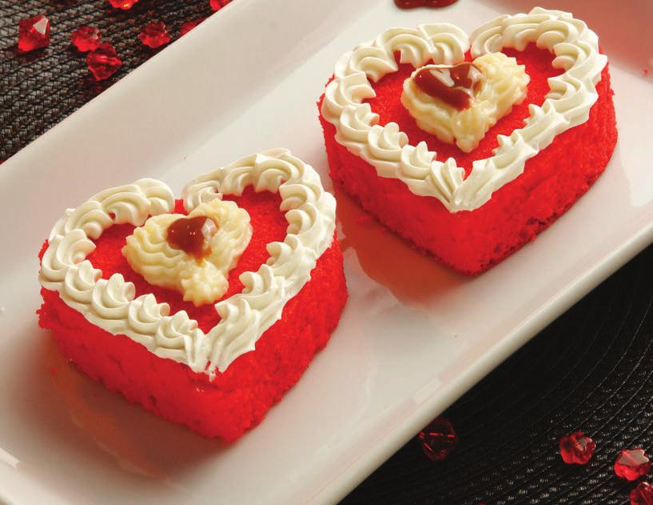

PARA EL GLASEADO:
Azúcar impalpable tamizada 4 Tazas
Extracto de vainilla 1 y 1/2 cdita.
Manteca La Serenísima a temperatura ambiente 1 Taza
Queso crema a temperatura ambiente 1 y 1/2 Paquete
PARA EL PASTEL/BIZCOCHO:
Vinagre blanco 1 y 1/2 cda
Extracto de vainilla 2 cditas.
Bicarbonato de sodio 1 cdita.
Sal 1/4 cdita.
Manteca La Serenísima a temperatura ambiente 1 y 1/2 Taza
Pasta de colorante rojo 1 cdita.
Polvo para hornear 1/2 cdita.
Azúcar 2 Tazas
Cacao en polvo regular 1/4 Taza
Harina todo uso 2 y 1/2 Tazas
Huevos grandes a temperatura ambiente 2 Unidades
Precalentar el horno a 180° C.
Enmantecar dos moldes cuadrados de 20 cm y forrar con papel manteca de manera que llegue hasta los lados también.
Batir la mantequilla con una batidora eléctrica o en una batidora de mesa, hasta que esté suave.
Añadir el azúcar y batir hasta que quede suave y esponjosa.
Agregar los huevos de a uno batiendo bien después de cada adición.
Agregar la vainilla.
Tamizar en otro bol todos los ingredientes secos : la harina, el cacao en polvo, el bicarbonato de sodio, el polvo de hornear y la sal.
Añadir esto alternadamente con el suero de leche, comenzando y terminando con la harina.
Revolver el vinagre blanco y el colorante al mismo al tiempo y añadir esto a la mezcla de la torta batiendo en velocidad baja hasta tener una masa uniforme.
Verter la mezcla en los moldes preparados y nivelar.
Llevar la preparación al horno unos 35 minutos o hasta que el probador que inserte en el centro de la salga limpio.
Dejar enfriar los bizcochos en sus moldes durante 20 minutos.
Sacar para que se enfríen completamente.
GLASEADO
Batir la mantequilla hasta que quede esponjosa.
Batir el queso crema hasta que esté bien mezclado y suave.
Añadir el azúcar impalpable en 2 adiciones.
Comenzar batiendo a baja velocidad e ir aumentando.
Agregar la vainilla.
ARMADO
Colocar la primera capa en un plato y colocar una generosa de crema en la parte superior.
Tapar con una segunda capa de bizcocho y untar más glaseado por encima y por los lados. Para darle efectos de remolino, ayudarse con una espátula y luego dejar enfriar durante al menos 2 horas antes de cortar para servir.
